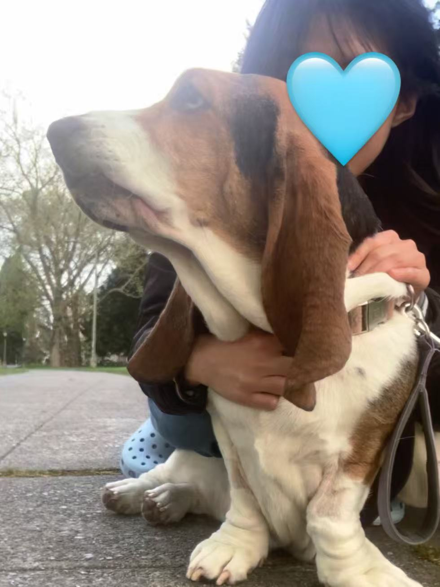
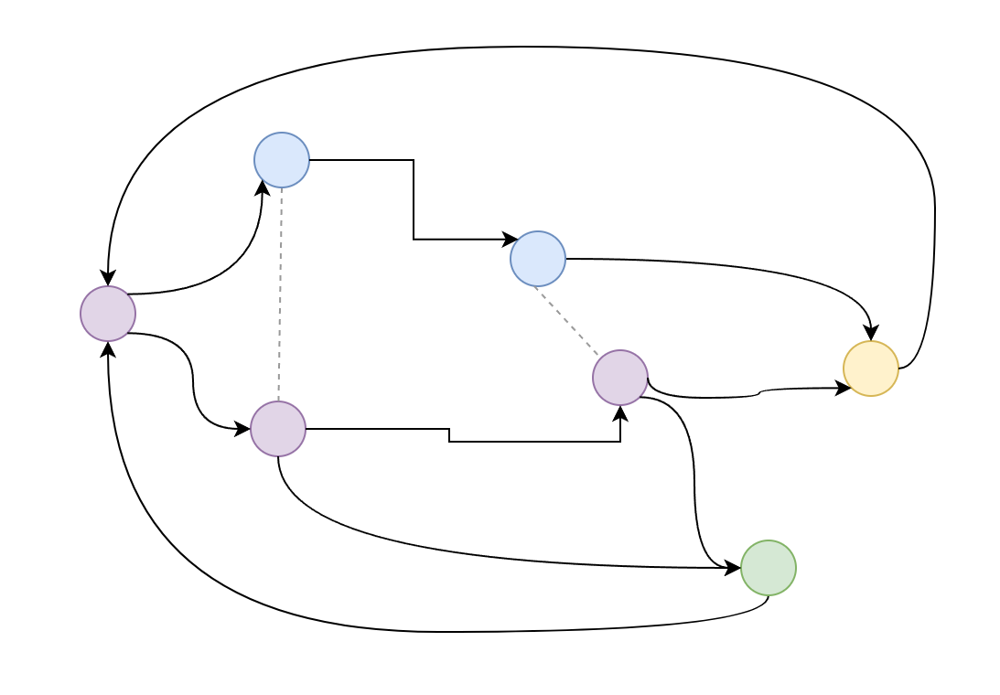

This project is an HTML hypertext work using text, images, audio, video, and clickable hypertext links to imagine alternative futures for myself. Inspired by Mendi + Keith Obadike's Keeping Up Appearances (2001), and by my own personal identity.
During my time at UW, I experienced imposter syndrome as a CS and statistics double major. I often imagined other versions of my life, especially what it might have looked like had I transferred to Tufts.

Then there was the incident involving Milky, my cousin's basset hound, who had become a central part of my life and my personality for years. After the incident, I found myself returning to those same counterfactual questions, imagining , daydreaming, regreting, griefing.
In real life, I cope by intentionally suppressing these memories of Milky. I do not mention Milky. I focus instead on Shimmer, my own basset hound, to move forward.
This project mirrors that dynamic. The surface narrative appears to be about my cousin's life and my own path. Milky is rarely visible. References to her, textual and photographic, are hidden throughout the pages, embedded in hover interactions that require the reader to actively seek them out.

The site is non-linear and looping. Hypertext links between pages allow readers to move freely and return to the starting point repeatedly, simulating the circular, involuntary imagination of alternative futures that both my imposter syndrome and the panic of the incident set in motion.